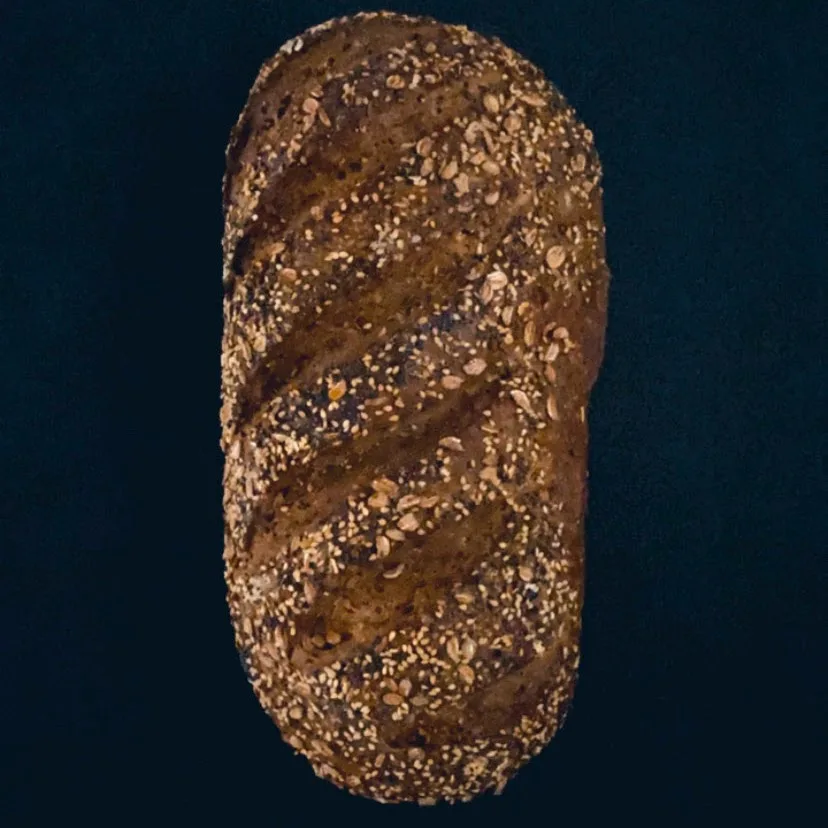
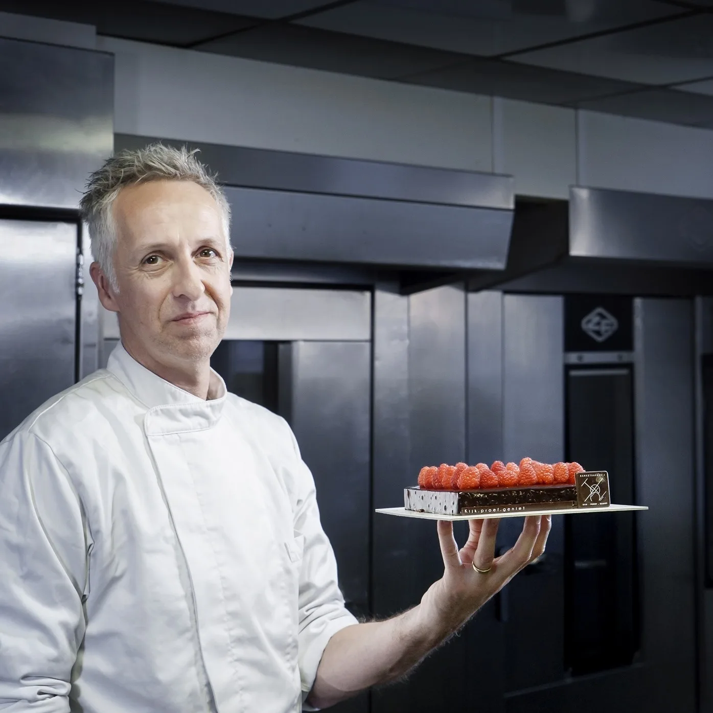
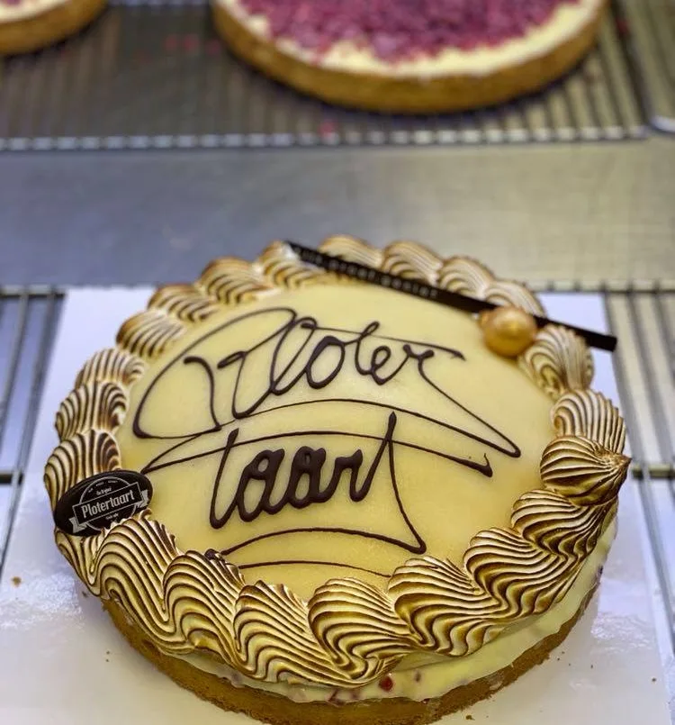
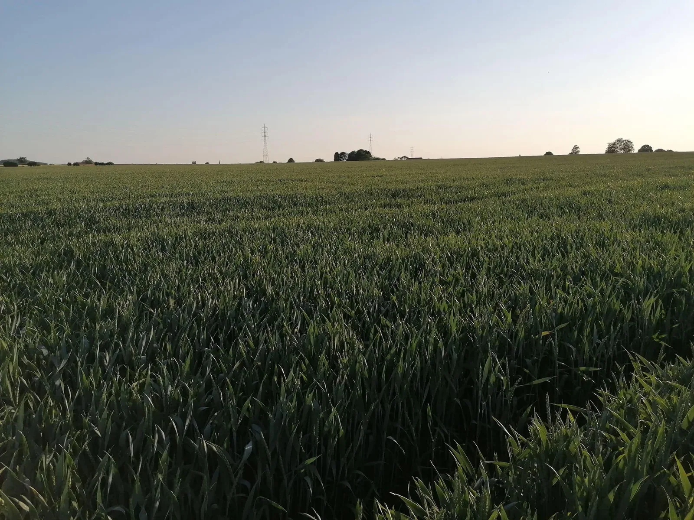
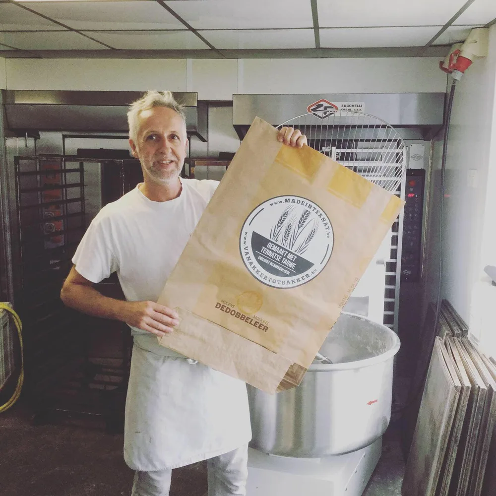
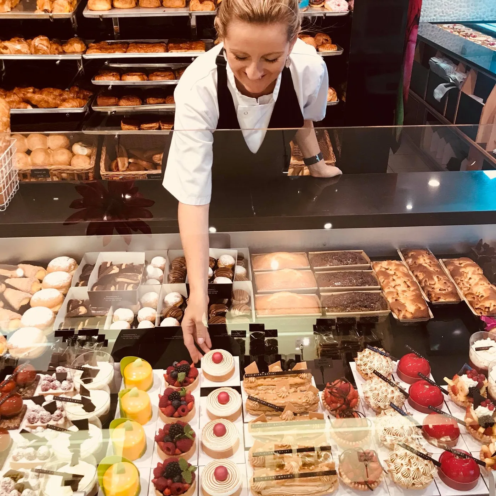
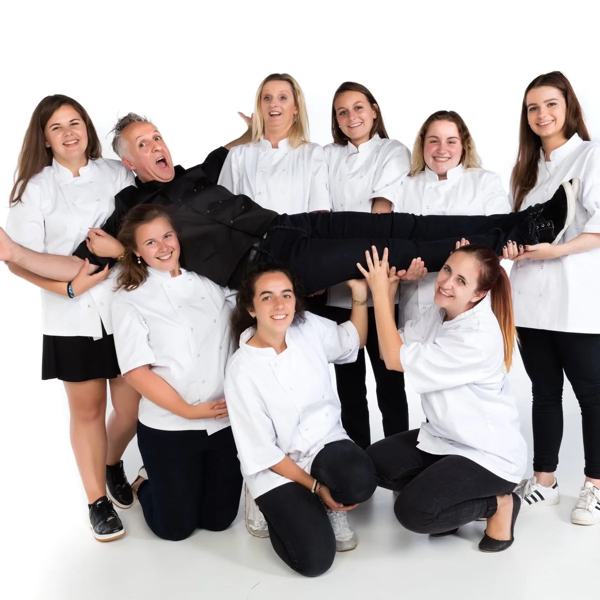

Louike
Meergranen op Ternatse bloem, met zaden en granen.
Patisserie die bij Gault&Millau in de top 50 van het land staat, en brood van tarwe die gewoon hier in Ternat groeit.


Volgens meer dan duizend klanten de beste taart ooit. Wij gaan daar niet tegenin.
Liever koud? De Ploter-Ice heeft een krokante bodem met vanille-ijs en frambozensorbet, afgewerkt met marsepein en zachte meringue.
Onze desembroden beginnen op een veld in Ternat. Er gaat bloem, water, zout en huisgemaakte desem in. Meer niet.





Meergranen op Ternatse bloem, met zaden en granen.

Ternats donker volkoren, niets toegevoegd.
Van de koeken op zondagochtend tot feestgebak met een foto of tekening erop. Klein, fijn afgewerkt en vers uit ons eigen atelier.




“Amai wil toch even laten weten dat jullie taarten 1 voor 1 prachtige kunstwerkjes zijn echt whauw!! Te mooi om op te eten.”Sylvia Vertommen
“Lekkere koeken. Enorme keuze uit het beste gebak. Daarvoor komen we graag eens naar Ternat. Hier geen enkele bakker die zo een lekker gerief heeft.”
Karine Van Craenenbroeck“Voor fijne patisserie met héél veel smaak moet je hier zijn! (…) De enige, echte plotertaart, een echte aanrader.”
Ingrid Van Wynendaele
Online bestellen kan tot 21u, voor de dag nadien. Verlofperiodes zie je hier altijd op tijd staan.
Ik maakte deze demo voor jullie om te tonen wat er kan. Na een kort gesprek maak ik er iets veel persoonlijkers van, helemaal naar jullie wens.
Vrijblijvend. Ik kom langs of we bellen.
Op maat, op jullie eigen domein.
Geen voorschot. Jullie betalen pas als alles klaar is.
Hosting, domeinnaam en kleine wijzigingen, zoals nieuwe openingsuren.
Omdat een voorbeeld meer zegt dan een mail. Zo zien jullie meteen wat er kan, en het kost jullie niets.
Nee. Het gesprek is vrijblijvend. Vinden jullie het niks, dan is het daarmee gedaan.
Na ons gesprek staat jullie site binnen 10 tot 14 dagen online.
Zeker. Jullie domeinnaam kan gewoon blijven, de nieuwe site komt in de plaats van de oude.
Nee, dat doe ik op basis van ons gesprek. Eigen foto's zijn mooi meegenomen, maar niet nodig om te starten.